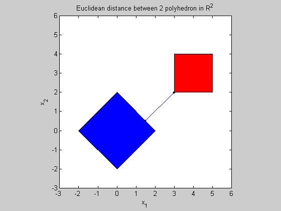

Euclidean distance between polyhedra in 2D
randn('seed',0);
n = 2;
m = 2*n;
A1 = randn(m,n);
b1 = randn(m,1);
A2 = randn(m,n);
b2 = randn(m,1);
fprintf(1,'Computing the distance between the 2 polyhedra...');
cvx_begin
variables x(n) y(n)
minimize (norm(x - y))
norm(x,1) <= 2;
norm(y-[4;3],inf) <=1;
cvx_end
fprintf(1,'Done! \n');
disp('------------------------------------------------------------------');
disp('The distance between the 2 polyhedra C and D is: ' );
disp(['dist(C,D) = ' num2str(cvx_optval)]);
disp('The optimal points are: ')
disp('x = '); disp(x);
disp('y = '); disp(y);
figure;
fill([-2; 0; 2; 0],[0;2;0;-2],'b', [3;5;5;3],[2;2;4;4],'r')
axis([-3 6 -3 6])
axis square
hold on;
plot(x(1),x(2),'k.')
plot(y(1),y(2),'k.')
plot([x(1) y(1)],[x(2) y(2)])
title('Euclidean distance between 2 polyhedron in R^2');
xlabel('x_1');
ylabel('x_2');
Computing the distance between the 2 polyhedra...
Calling SDPT3: 11 variables, 6 equality constraints
For improved efficiency, SDPT3 is solving the dual problem.
------------------------------------------------------------
num. of constraints = 6
dim. of socp var = 11, num. of socp blk = 5
*******************************************************************
SDPT3: Infeasible path-following algorithms
*******************************************************************
version predcorr gam expon scale_data
NT 1 0.000 1 0
it pstep dstep pinfeas dinfeas gap mean(obj) cputime
-------------------------------------------------------------------
0|0.000|0.000|3.7e-01|2.1e+00|4.9e+01| 2.828427e+00| 0:0:00| chol 1 1
1|1.000|0.920|2.0e-07|2.0e-01|5.6e+00|-2.580608e-02| 0:0:00| chol 1 1
2|0.881|0.995|4.0e-07|4.4e-03|6.2e-01|-1.928271e+00| 0:0:00| chol 1 1
3|0.881|0.933|2.3e-07|6.1e-04|7.7e-02|-2.093308e+00| 0:0:00| chol 1 1
4|1.000|1.000|3.3e-07|3.4e-05|8.3e-03|-2.120865e+00| 0:0:00| chol 1 1
5|0.987|0.989|4.0e-09|3.8e-06|1.0e-04|-2.121294e+00| 0:0:00| chol 1 1
6|0.982|0.988|1.8e-09|4.6e-08|1.5e-06|-2.121320e+00| 0:0:00| chol 2 2
7|0.981|1.000|3.4e-10|3.5e-10|5.8e-08|-2.121320e+00| 0:0:00|
stop: max(relative gap, infeasibilities) < 1.49e-08
-------------------------------------------------------------------
number of iterations = 7
primal objective value = -2.12132031e+00
dual objective value = -2.12132037e+00
gap := trace(XZ) = 5.76e-08
relative gap = 1.10e-08
actual relative gap = 1.03e-08
rel. primal infeas = 3.41e-10
rel. dual infeas = 3.51e-10
norm(X), norm(y), norm(Z) = 2.4e+00, 3.0e+00, 4.2e+00
norm(A), norm(b), norm(C) = 4.3e+00, 2.0e+00, 6.6e+00
Total CPU time (secs) = 0.1
CPU time per iteration = 0.0
termination code = 0
DIMACS: 3.4e-10 0.0e+00 4.6e-10 0.0e+00 1.0e-08 1.1e-08
-------------------------------------------------------------------
------------------------------------------------------------
Status: Solved
Optimal value (cvx_optval): +2.12132
Done!
------------------------------------------------------------------
The distance between the 2 polyhedra C and D is:
dist(C,D) = 2.1213
The optimal points are:
x =
1.5001
0.4999
y =
3.0000
2.0000
